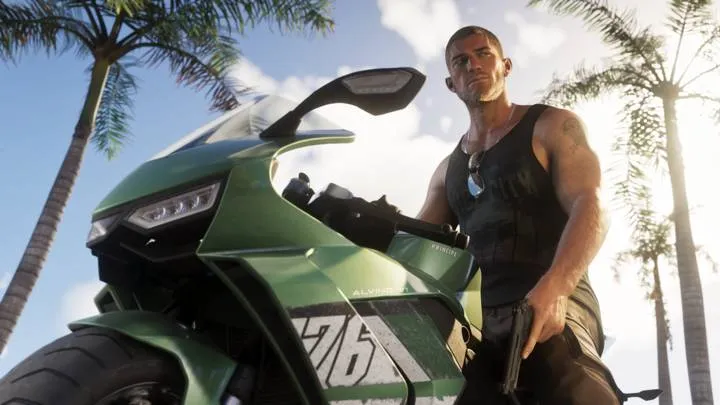
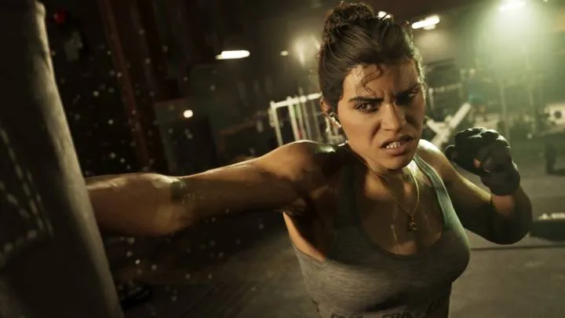
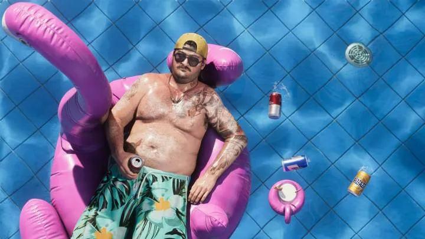
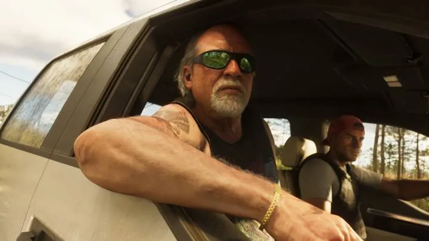
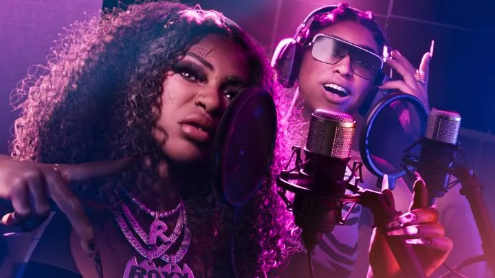
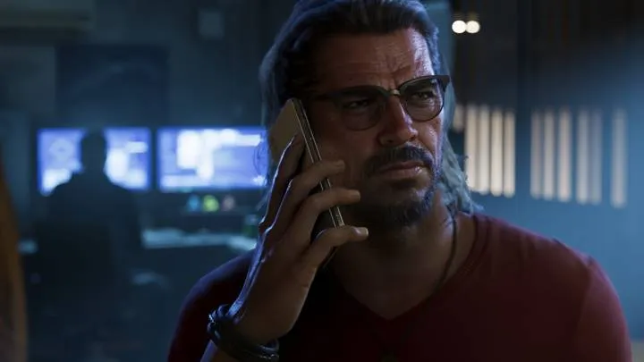

Разделы справочника
ПерсонажиДжейсон, Лусия и все герои Леониды8 персонажей
ТранспортМашины, мотоциклы, лодки и авиация20 карточек
ЗанятияГонки, рыбалка, парашют, клубы — с таймкодами19 занятий
МеханикиРозыск, угон, багажник, колесо предметов12 механик
Бренды и заведенияМарки, магазины, бары и клубы Леониды22 карточек
ЖивотныеАллигаторы, пумы, олени, черепахи, игуаны7 карточек
РегионыВайс-Сити, Кис, болота и ещё 3 региона6 регионов
Об игреДата выхода, цены, покупка в России, русский язык, ПК11 статей
Миссии и прохождениеВсе сюжетные миссии по порядкус 19 ноября
ОружиеВсё оружие и где его взятьс 19 ноября
Коллекционки и пасхалкиРедкие предметы, секреты и отсылкис 19 ноября
Карта ЛеонидыРежимы: сравнения, миссии, коллекционки, пасхалкискоро
Кто или где это?
Кадр из GTA 6 — угадай персонажа или регион Леониды. 10 вопросов.
Персонажи

Джейсон ДювальГлавный герой

Лусия КаминосГлавная героиня

Кэл ХэмптонДруг Джейсона

Брайан ХедерКонтрабандист из Кис
Буби АйкЛегенда Вайс-Сити
Д
Дре’Куан ПристПродюсер

Real DimezРэп-дуэт

Рауль БаутистаГрабитель банков
GTA 6 и реальность
Вторая часть Blip Guides: кадр из игры рядом с реальным фото — что Rockstar взяла из Флориды. 35 сравнений.
Смотреть сравнения →